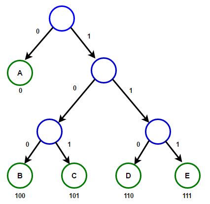

Huffman Coding¶
Suppose we have a sequence of characters that form a text. Now we want to convert each character into a sequence of 0s and 1s such that it can be reconstructed back into characters. Typically, this is done using ASCII code which maps each character to an 8-bit sequence of 0s and 1s. However, in practice, we do not use all characters equally in a text (for example, in English words, the letter 's' is used more frequently than 'z'). Therefore, using ASCII code would not be ideal if we want to minimize the length of the resulting binary string. Intuitively, we should assign shorter binary sequences to high-frequency characters and longer binary sequences to less frequently occurring characters.
The process of converting a sequence of letters into a sequence of 0s and 1s is called encoding, and the reverse process (i.e., converting a sequence of 0s and 1s into letters) is called decoding.
The first question that arises is: How do we uniquely map each letter to a binary sequence to ensure decoding is unambiguous and correct? A clever idea here is to use trees. We define a rooted binary tree called an encoding tree with the following properties:
Each node in this tree has at most two children. On the edges from each node to its children, we write 0 and 1 (0 for the left child and 1 for the right child).
Each leaf of this tree (the root is never considered a leaf) corresponds to one of the letters in our alphabet.
For each letter \(x\) in the alphabet, let \(u\) be the leaf corresponding to \(x\). Then the sequence of 0s and 1s observed along the path from the root to node \(u\) is assigned as the correspondence for letter \(x\).
Now, how do we decode a binary text? Start by placing a marker on the root node and begin reading the binary text. If you read 0, move to the left child, and if you read 1, move to the right child. Continue this until you reach a leaf, which corresponds to a letter. This letter is the first character of the original text. (Note that no non-leaf node is mapped to a letter, so the first character cannot be anything else.) Then reset the marker to the root and repeat the process to decode the next character. By continuing this process, the entire string can be decoded. If during this process the marker attempts to follow a non-existent edge (e.g., reading 0 but no left child exists) or if the marker does not end on the root after decoding, the binary text is invalid, meaning no original text could produce it through encoding.
{kind=link}

A Minimum Tree
----------------
Now that we know the correspondence between characters and binary strings can be established by constructing an encoding tree, we return to the main problem. Our goal now is to provide an encoding tree that minimizes the length of the encoded binary string.
More precisely, suppose we want to design an encoding tree that converts text :math:`s` into binary sequence :math:`p` such that the length of :math:`p` is minimized. Let the frequency of the :math:`i`-th character be :math:`c_i` in string :math:`s`. The length of :math:`p` will then be :math:`\sum h_i \times c_i`, so we want to minimize this sum.
Let the desired encoding tree be :math:`T`. Note the following points:
- If we sort the characters by their frequencies (:math:`c_i`) from least to most frequent, their depths :math:`h_i` will be sorted from greatest to least. (Otherwise, we could swap the nodes corresponding to two characters to reduce the length of :math:`p`).
- All leaves have siblings (unless there's only one leaf). Otherwise, we could delete such a leaf and assign its character to its parent, thereby reducing the length of :math:`p`.
- If two leaves :math:`a` and :math:`b` are at the same depth, we can swap their assigned characters without changing the length of :math:`p`.
Thus, we conclude that if :math:`x` and :math:`y` are the two characters with the smallest frequencies, they reside at the deepest level of the tree. Moreover, their corresponding nodes can be rearranged to be siblings!
Hence, there exists an optimal configuration where the leaves corresponding to :math:`x` and :math:`y` are siblings at the deepest level. Suppose their depth is :math:`h`. Since their binary codes differ only in the last digit (the :math:`h`-th position), the :math:`h`-th digit contributes :math:`c_x + c_y` to the total length.
We can now remove characters :math:`x` and :math:`y`, replacing them with a new character :math:`z` (represented by their parent node). This reduces the alphabet size by one, allowing us to solve the problem recursively. If the minimal length for the new problem is :math:`ans^{\prime}`, then the solution for the original problem is :math:`ans = ans^{\prime} + c_x + c_y`.
Notably, the optimal tree :math:`T` we postulated will be automatically constructed during the algorithm's steps!
.. figure:: /_static/huffman.png
:width: 50%
:align: center
:alt: If the internet sucks, this appears
Thus, the algorithm works as follows: at each step, combine the two characters with the smallest frequencies (say :math:`x` and :math:`y`), replace them with a new character having frequency :math:`c_x + c_y`, and add :math:`c_x + c_y` to the total answer.
The implementation of this algorithm can be seen below.
typedef pair<int, int> pii;
const int maxn = 1e5 + 10;
vector<int> Tree[maxn]; // bache haye har raas dar derakht ramz gozari
int c[maxn]; // tedad tekrar haye har harf
int Counter; // kamtarin id raasi ke nadarim ra negah midarad
priority_queue<pii, vector<pii>, greater<pii> > pq; // yek heap minimum
int main(){
int n; // tedad horoof alephba
cin >> n;
for(int i = 0; i < n; i++){
cin >> c[i];
pq.push({c[i], i});
}
Counter = n;
int ans = 0;
while(pq.size() > 1){
int x = pq.top().second, y = pq.top().second;
pq.pop(), pq.pop();
int z = Counter;
Counter++;
Tree[z].push_back(x);
Tree[z].push_back(y);
c[z] = c[x] + c[y];
ans+= c[x] + c[y];
pq.push({c[z], z});
}
// dar inja ans kamine tool p mibashad va dar Tree yek derakht ramzgozari behine sakhtim.
}
This book is made by The Shaazzz contributors.
It is publicly available with cc-by-sa license.
Last updated at آوریل 19, 2025.
Rendered by Sphinx (4.3.2) and Minoo theme (Beta 0.9.7).